Chapter 3: Book III. Theory of the Circle¶
3.1 Book III. Theory of the Circle¶
________________
DEFINITIONS.
i. Equal circles are those whose radii are equal.
This is a theorem, and not a definition. For if two circles have equal radii, they are evidently congruent figures, and therefore equal. From this way of proving this theorem Props. xxvi.–xxix. follow as immediate inferences.
ii. A chord of a circle is the line joining two points in its circumference.
If the chord be produced both ways, the whole line is called a secant, and each of the parts into which a secant divides the circumference is called an arc—the greater the major conjugate arc, and the lesser the minor conjugate arc.—Newcomb.
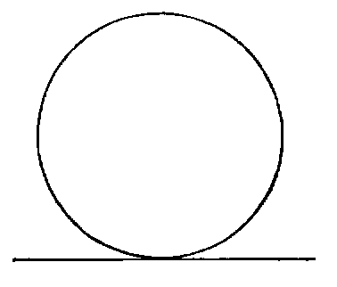
iii. A right line is said to touch a circle when it meets the circle, and, being produced both ways, does not cut it; the line is called a tangent to the circle, and the point where it touches it the point of contact.
In Modern Geometry a curve is considered as made up of an infinite number of points, which are placed in order along the curve, and then the secant through two consecutive points is a tangent. Euclid’s definition for a tangent is quite inadequate for any curve but the circle, and those derived from it by projection (the conic sections); and even for these the modern definition is better.
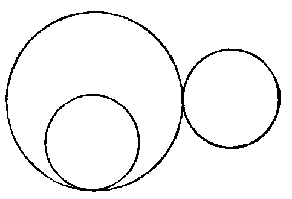
iv. Circles are said to touch one another when they meet, but do not intersect. There are two species of contact:—
1. When each circle is external to the other.
2. When one is inside the other.
The following is the modern definition of curve-contact:— When two curves have two, three, four, &c., consecutive points common, they have contact of the first, second, third, &c., orders.
v. A segment of a circle is a figure bounded by a chord and one of the arcs into which it divides the circumference.
vi. Chords are said to be equally distant from the centre when the perpendiculars drawn to them from the centre are equal.
vii. The angle contained by two lines, drawn from any point in the circumference of a segment to the extremities of its chord, is called an angle in the segment.
viii. The angle of a segment is the angle contained between its chord and the tangent at either extremity.
A theorem is tacitly assumed in this Definition, namely, that the angles which the chord makes with the tangent at its extremities are equal. We shall prove this further on.
ix. An angle in a segment is said to stand on its conjugate arc.
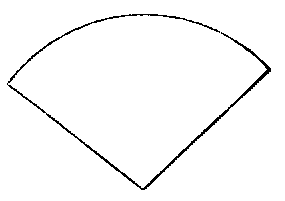
x. Similar segments of circles are those that contain equal angles.
xi. A sector of a circle is formed of two radii and the arc included between them.
To a pair of radii may belong either of the two conjugate arcs into which their ends divide the circle.—Newcomb.
xii. Concentric circles are those that have the same centre.
xiii. Points which lie on the circumference of a circle are said to be concyclic.
xiv. A cyclic quadrilateral is one which is inscribed in a circle.
xv. It will be proper to give here an explanation of the extended meaning of the word angle in Modern Geometry. This extension is necessary in Trigonometry, in Mechanics—in fact, in every application of Geometry, and has been partly given in I. Def. ix.
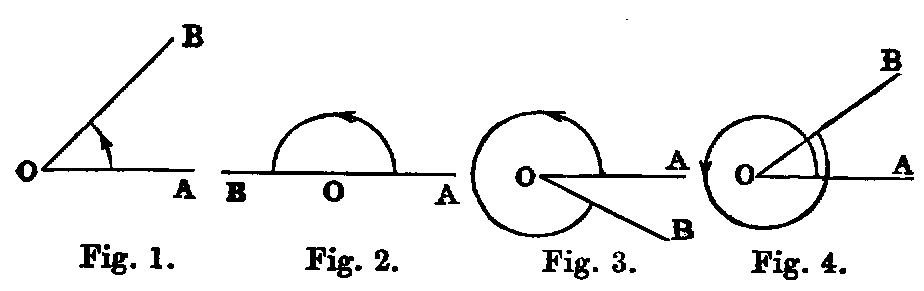
Thus, if a line OA revolve about the point O, as in figures 1, 2, 3, 4, until it comes into the position OB, the amount of the rotation from OA to OB is called an angle. From the diagrams we see that in fig. 1 it is less than two right angles; in fig. 2 it is equal to two right angles; in fig. 3 greater than two right angles, but less than four; and in fig. 4 it is greater than four right angles. The arrow-heads denote the direction or sense, as it is technically termed, in which the line OA turns. It is usual to call the direction indicated in the above figures positive, and the opposite negative. A line such as OA, which turns about a fixed point, is called a ray, and then we have the following definition:—
xvi. A ray which turns in the sense opposite to the hands of a watch describes a positive angle, and one which turns in the same direction as the hands, a negative angle.
PROP. I.—Problem.
To find the centre of a given circle (ADB).
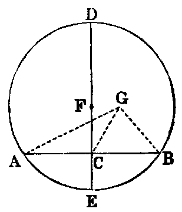
Sol.—Take any two points A, B in the circumference. Join AB. Bisect it in C. Erect CD at right angles to AB. Produce DC to meet the circle again in E. Bisect DE in F. Then F is the centre.
Dem.—If possible, let any other point G be the centre. Join GA, GC, GB. Then in the triangles ACG, BCG we have AC equal to CB (const.), CG common, and the base GA equal to GB, because they are drawn from G, which is, by hypothesis, the centre, to the circumference. Hence [I. viii.] the angle ACG is equal to the adjacent angle BCG, and therefore [I. Def. xiii.] each is a right angle; but the angle ACD is right (const.); therefore ACD is equal to ACG—a part equal to the whole—which is absurd. Hence no point can be the centre which is not in the line DE. Therefore F, the middle point of DE, must be the centre.
The foregoing proof may be abridged as follows:—
Because ED bisects AB at right angles, every point equally distant from, the points A, B must lie in ED [I. x. Ex. 2]; but the centre is equally distant from A and B; hence the centre must be in ED; and since it must be equally distant from E and D, it must be the middle point of DE.
Cor. 1.—The line which bisects any chord of a circle perpendicularly passes through the centre of the circle.
Cor. 2.—The locus of the centres of the circles which pass through two fixed points is the line bisecting at right angles that connecting the two points.
Cor. 3.—If A, B, C be three points in the circumference of a circle, the lines bisecting perpendicularly the chords AB, BC intersect in the centre.
PROP. II.—Theorem.
If any two points (A, B) be taken in the circumference of a circle—1. The segment (AB) of the indefinite line through these points which lies between them falls within the circle. 2. The remaining parts of the line are without the circle.
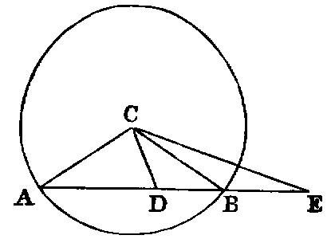
Dem.—1. Let C be the centre. Take any point D in AB. Join CA,CD,CB. Now the angle ADC is [I. xvi.] greater than ABC; but the angle ABC is equal to CAB [I. v.], because the triangle CAB is isosceles; therefore the angle ADC is greater than CAD. Hence AC is greater than CD [I. xix.]; therefore CD is less than the radius of the circle, consequently the point D must be within the circle (note on I. Def. xxxiii.).
In the same manner every other point between A and B lies within the circle.
2. Take any point E in AB produced either way. Join CE. Then the angle ABC is greater than AEC [I. xvi.]; therefore CAB is greater than AEC. Hence CE is greater than CA, and the point E is without the circle.
We have added the second part of this Proposition. The indirect proof given of the first part in several editions of Euclid is very inelegant; it is one of those absurd things which give many students a dislike to Geometry.
Cor. 1.—Three collinear points cannot be concyclic.
Cor. 2.—A line cannot meet a circle in more than two points.
Cor. 3.—The circumference of a circle is everywhere concave towards the centre.
PROP. III.–Theorem.
If a line (AB) passing through the centre of a circle bisect a chord (CD), which does not pass through the centre, it cuts it at right angles. 2. If it cuts it at right angles, it bisects it.
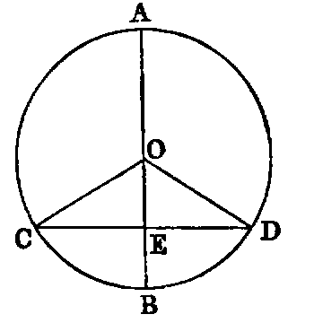
Dem.—1. Let O be the centre of the circle. Join OC, OD. Then the triangles CEO, DEO have CE equal to ED (hyp.), EO common, and OC equal to OD, because they are radii of the circle; hence [I. viii.] the angle CEO is equal to DEO, and they are adjacent angles. Therefore [I. Def. xiii.] each is a right angle. Hence AB cuts CD at right angles.
2. The same construction being made: because OC is equal to OD, the angle OCD is equal to ODC [I. v.], and CEO is equal to DEO (hyp.), because each is right. Therefore the triangles CEO, DEO have two angles in one respectively equal to two angles in the other, and the side EO common. Hence [I. xxvi.] the side CE is equal to ED. Therefore CD is bisected in E.
2. May be proved as follows:—
| OC2 = OE2+ | EC2 [I. xlvii.], and OD2 = OE2 + ED2; | ||||||||
|---|---|---|---|---|---|---|---|---|---|
| but | OC2 = | OD2; ∴ OE2 + EC2 = OE2 + ED2. | |||||||
| Hence | EC2 = ED2, and EC = ED. |
Observation.—The three theorems, namely, Cor. 1., Prop. i., and Parts 1, 2, of Prop. iii., are so related, that any one being proved directly, the other two follow by the Rule of Identity.
Cor. 1.—The line which bisects perpendicularly one of two parallel chords of a circle bisects the other perpendicularly.
Cor. 2.—The locus of the middle points of a system of parallel chords of a circle is the diameter of the circle perpendicular to them all.
Cor. 3.—If a line intersect two concentric circles, its intercepts between the circles are equal.
Cor. 4.—The line joining the centres of two intersecting circles bisects their common chord perpendicularly.
Exercises.
1. If a chord of a circle subtend a right angle at a given point, the locus of its middle point is a circle.
2. Every circle passing through a given point, and having its centre on a given line, passes through another given point.
3. Draw a chord in a given circle which shall subtend a right angle at a given point, and be parallel to a given line.
PROP. IV.—Theorem.
Two chords of a circle (AB, CD) which are not both diameters cannot bisect each other, though either may bisect the other.
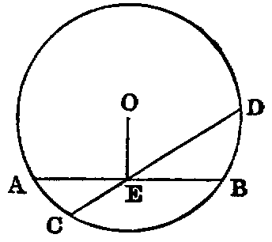
Dem.—Let O be the centre. Let AB, CD intersect in E; then since AB, CD are not both diameters, join OE. If possible let AE be equal to EB, and CE equal to ED. Now, since OE passing through the centre bisects AB, which does not pass through the centre, it is at right angles to it; therefore the angle AEO is right. In like manner the angle CEO is right. Hence AEO is equal to CEO—that is, a part equal to the whole—which is absurd. Therefore AB and CD do not bisect each other.
Cor.—If two chords of a circle bisect each other, they are both diameters.
PROP. V.—Theorem.
If two circles (ABC, ABD) cut one another in any point (A), they are not concentric.
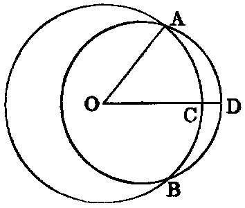
Dem.—If possible let them have a common centre at O. Join OA, and draw any other line OD, cutting the circles in C and D respectively. Then because O is the centre of the circle ABC, OA is equal to OC. Again, because O is the centre of the circle ABD, OA is equal to OD. Hence OC is equal to OD—a part equal to the whole—which is absurd. Therefore the circles are not concentric.
Exercises.
1. If two non-concentric circles intersect in one point, they must intersect in another point. For, let O, O′ be the centres, A the point of intersection; from A let fall the ⊥ AC on the line OO′. Produce AC to B, making BC = CA: then B is another point of intersection.
2. Two circles cannot have three points in common without wholly coinciding.
PROP. VI.—Theorem.
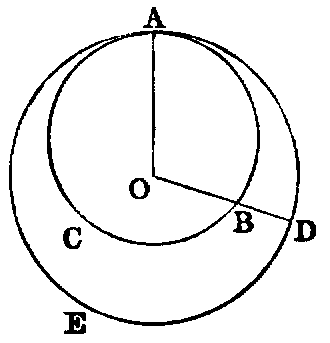
If one circle (ABC) touch another circle (ADE) internally in any point (A), it is not concentric with it.
Dem.—If possible let the circles be concentric, and let O be the centre of each. Join OA, and draw any other line OD, cutting the circles in the points B, D respectively. Then because O is the centre of each circle (hyp.), OB and OD are each equal to OA; therefore OB is equal to OD, which is impossible. Hence the circles cannot have the same centre.
PROP. VII.—Theorem.
If from any point (P) within a circle, which is not the centre, lines (PA, PB, PC, &c.), one of which passes through the centre, be drawn to the circumference, then—1. The greatest is the line (PA) which passes through the centre. 2. The production (PE) of this in the opposite direction is the least. 3. Of the others, that which is nearest to the line through the centre is greater than every one more remote. 4. Any two lines making equal angles with the diameter on opposite sides are equal. 5. More than two equal right lines cannot be drawn from the given point (P) to the circumference.
Dem.—1. Let O be the centre. Join OB. Now since O is the centre, OA is equal to OB: to each add OP, and we have AP equal to the sum of OB, OP; but the sum of OB, OP is greater than PB [I. xx.]. Therefore PA is greater than PB.
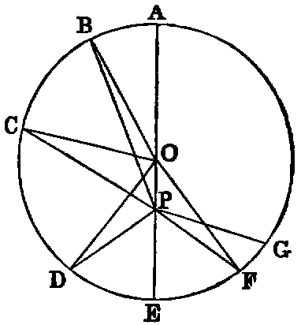
2. Join OD. Then [I. xx.] the sum of OP, PD is greater than OD; but OD is equal to OE [I. Def. xxx.]. Therefore the sum of OP, PD is greater than OE. Reject OP, which is common, and we have PD greater than PE.
3. Join OC; then two triangles POB, POC have the side OB equal to OC [I. Def. xxx.], and OP common; but the angle POB is greater than POC; therefore [I. xxiv.] the base PB is greater than PC. In like manner PC is greater than PD.
4. Make at the centre O the angle POF equal to POD. Join PF. Then the triangles POD, POF have the two sides OP, OD in one respectively equal to the sides OP, OF in the other, and the angle POD equal to the angle POF; hence PD is equal to PF [I. iv.], and the angle OPD equal to the angle OPF. Therefore PD and PF make equal angles with the diameter.
5. A third line cannot be drawn from P equal to either of the equal lines PD, PF. If possible let PG be equal to PD, then PG is equal to PF—that is, the line which is nearest to the one through the centre is equal to the one which is more remote, which is impossible. Hence three equal lines cannot be drawn from P to the circumference.
Cor. 1.—If two equal lines PD, PF be drawn from a point P to the circumference of a circle, the diameter through P bisects the angle DPF formed by these lines.
Cor. 2.—If P be the common centre of circles whose radii are PA, PB, PC, &c., then—1. The circle whose radius is the maximum line (PA) lies outside the circle ADE, and touches it in A [Def. iv.]. 2. The circle whose radius is the minimum line (PE) lies inside the circle ADE, and touches it in E. 3. A circle having any of the remaining lines (PD) as radius cuts ADE in two points (D, F).
Observation.—Proposition vii. affords a good illustration of the following important definition (see Sequel to Euclid, p. 13):—If a geometrical magnitude varies its position continuously according to any law, and if it retains the same value throughout, it is said to be a constant, such as the radius of a circle revolving round the centre; but if it goes on increasing for some time, and then begins to decrease, it is said to be a maximum at the end of the increase. Thus, in the foregoing figure, PA, supposed to revolve round P and meet the circle, is a maximum. Again, if it decreases for some time, and then begins to increase, it is a minimum at the commencement of the increase. Thus PE, supposed as before to revolve round P and meet the circle, is a minimum. Proposition viii. will give other illustrations.
PROP. VIII.—Theorem.
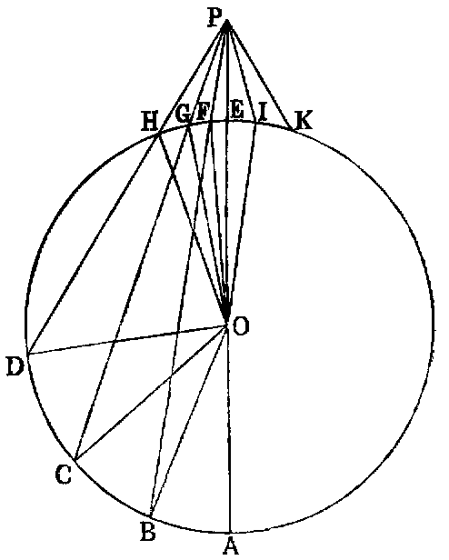
If from any point (P) outside a circle, lines (PA, PB, PC, &c.) be drawn to the concave circumference, then—1. The maximum is that which passes through the centre. 2. Of the others, that which is nearer to the one through the centre is greater than the one more remote. Again, if lines be drawn to the convex circumference—3. The minimum is that whose production passes through the centre. 4. Of the others, that which is nearer to the minimum is less than one more remote. 5. From the given point (P) there can be drawn two equal lines to the concave or the convex circumference, both of which make equal angles with the line passing through the centre. 6. More than two equal lines cannot be drawn from the given point (P) to either circumference.
Dem.—1. Let O be the centre. Join OB. Now since O is the centre, OA is equal to OB: to each add OP, and we have AP equal to the sum of OB, OP; but the sum of OB, OP is greater than BP [I. xx.]. Therefore AP is greater than BP.
2. Join OC, OD. The two triangles BOP, COP have the side OB equal to OC, and OP common, and the angle BOP greater than COP; therefore the base BP is greater than CP [I. xxiv.]. In like manner CP is greater than DP, &c.
3. Join OF. Now in the triangle OFP the sum of the sides OF, FP is greater than OP [I. xx.]; but OF is equal to OE [I. Def. xxx.]. Reject them, and FP will remain greater than EP.
4. Join OG, OH. The two triangles GOP, FOP have two sides GO, OP in one respectively equal to two sides FO, OP in the other; but the angle GOP is greater than FOP; therefore [I. xxiv.] the base GP is greater than FP. In like manner HP is greater than GP.
5. Make the angle POI equal POF [I. xxiii.]. Join IP. Now the triangles IOP, FOP have two sides IO, OP in one respectively equal to two sides FO, OP in the other, and the angle IOP equal to FOP (const.); therefore [I. iv.] IP is equal to FP.
6. A third line cannot be drawn from P equal to either of the lines IP, FP. For if possible let PK be equal to PF; then PK is equal to PI—that is, one which is nearer to the minimum equal to one more remote—which is impossible.
Cor. 1.—If PI be produced to meet the circle again in L, PL is equal to PB.
Cor. 2.—If two equal lines be drawn from P to either the convex or concave circumference, the diameter through P bisects the angle between them, and the parts of them intercepted by the circle are equal.
Cor. 3.—If P be the common centre of circles whose radii are lines drawn from P to the circumference of HDE, then—1. The circle whose radius is the minimum line (PE) has contact of the first kind with ADE [Def. iv.]. 2. The circle whose radius is the maximum line (PA) has contact of the second kind. 3. A circle having any of the remaining lines (PF) as radius intersects HDE in two points (F, I).
PROP. IX.—Theorem.
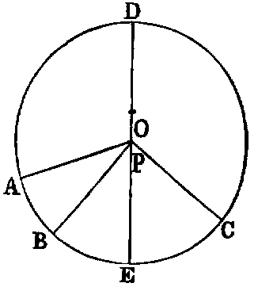
A point (P) within a circle (ABC), from which more than two equal lines (PA, PB, PC, &c.) can be drawn to the circumference, is the centre.
Dem.—If P be not the centre, let O be the centre. Join OP, and produce it to meet the circle in D and E; then DE is the diameter, and P is a point in it which is not the centre: therefore [vii.] only two equal lines can be drawn from P to the circumference; but three equal lines are drawn (hyp.), which is absurd. Hence P must be the centre.
Or thus: Since the lines AP, BP are equal, the line bisecting the angle APB [vii. Cor. 1] must pass through the centre: in like manner the line bisecting the angle BPC must pass through the centre. Hence the point of intersection of these bisectors, that is, the point P, must be the centre.
PROP. X.—Theorem.
If two circles have more than two points common, they must coincide.
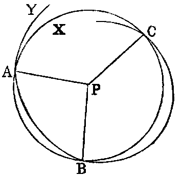
Dem.—Let X be one of the circles; and if possible let another circle Y have three points, A, B, C, in common with X, without coinciding with it. Find P, the centre of X. Join PA, PB, PC. Then since P is the centre of X, the three lines PA, PB, PC are equal to one another.
Again, since Y is a circle and P a point, from which three equal lines PA, PB, PC can be drawn to its circumference, P must be the centre of Y . Hence X and Y are concentric, which [v.] is impossible.
Cor.—Two circles not coinciding cannot have more than two points common. Compare I., Axiom x., that two right lines not coinciding cannot have more than one point common.
PROP. XI.—Theorem.
If one circle (CPD) touch another circle (APB) internally at any point P, the line joining the centres must pass through that point.
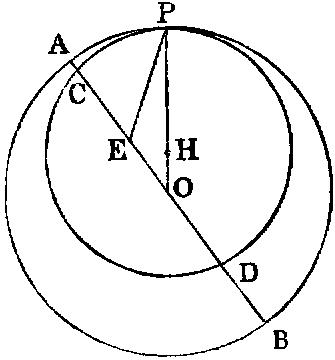
Dem.—Let O be the centre of APB. Join OP. I say the centre of the smaller circle is in the line OP. If not, let it be in any other position such as E. Join OE, EP, and produce OE through E to meet the circles in the points C, A. Now since E is a point in the diameter of the larger circle between the centre and A, EA is less than EP [vii. 2]; but EP is equal to EC (hyp.), being radii of the smaller circle. Hence EA is less than EC; which is impossible; consequently the centre of the smaller circle must be in the line OP. Let it be H; then we see that the line joining the centres passes through the point P.
Or thus: Since EP is a line drawn from a point within the circle APB to the circumference, but not forming part of the diameter through E, the circle whose centre is E and radius EP cuts [vii., Cor. 2] APB in P, but it touches it (hyp.) also in P, which is impossible. Hence the centre of the smaller circle CPD must be in the line OP.
PROP. XII.—Theorem.
If two circles (PCF, PDE) have external contact at any point P, the line joining their centres must pass through that point.
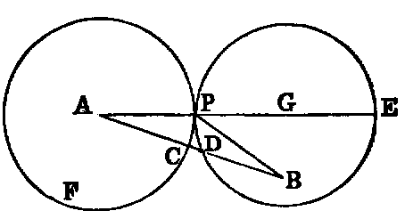
Dem.—Let A be the centre of one of the circles. Join AP, and produce it to meet the second circle again in E. I say the centre of the second circle is in the line PE. If not, let it be elsewhere, as at B. Join AB, intersecting the circles in C and D, and join BP. Now since A is the centre of the circle PCF, AP is equal to AC; and since B is the centre of the circle PDE, BP is equal to BD. Hence the sum of the lines AP, BP is equal to the sum of the lines AC, DB; but AB is greater than the sum of AC and DB; therefore AB is greater than the sum of AP, PB—that is, one side of a triangle greater than the sum of the other two–which [I. xx.] is impossible. Hence the centre of the second circle must be in the line PE. Let it be G, and we see that the line through the centres passes through the point P.
Or thus: Since BP is a line drawn from a point without the circle PCF to its circumference, and when produced does not pass through the centre, the circle whose centre is B and radius BP must cut the circle PCF in P [viii., Cor. 3]; but it touches it (hyp.) also in P, which is impossible. Hence the centre of the second circle must be in the line PE.
Observation.—Propositions xi, xii., may both be included in one enunciation as follows:—“If two circles touch each other at any point, the centres and that point are collinear.” And this latter Proposition is a limiting case of the theorem given in Proposition iii., Cor. 4, that “The line joining the centres of two intersecting circles bisects the common chord perpendicularly.”
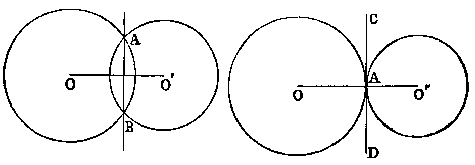
Suppose the circle whose centre is O and one of the points of intersection A to remain fixed, while the second circle turns round that point in such a manner that the second point of intersection B becomes ultimately consecutive to A; then, since the line OO′ always bisects AB, we see that when B ultimately becomes consecutive to A, the line OO′ passes through A. In consequence of the motion, the common chord will become in the limit a tangent to each circle, as in the second diagram.—Comberousse, Géométrie Plane, page 57.
Cor. 1.—If two circles touch each other, their point of contact is the union of two points of intersection. Hence a contact counts for two intersections.
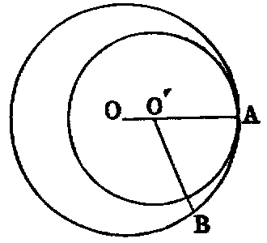
Cor. 2.—If two circles touch each other at any point, they cannot have any other common point. For, since two circles cannot have more than two points common [x.], and that the point of contact is equivalent to two common points, circles that touch cannot have any other point common. The following is a formal proof of this Proposition:—Let O, O′ be the centres of the two circles, A the point of contact, and let O′ lie between O and A; take any other point B in the circumference of O. Join O′B; then [vii.] O′B is greater than O′A; therefore the point C is outside the circumference of the smaller circle. Hence B cannot be common to both circles. In like manner, they cannot have any other common point but A.
PROP. XIII.—Theorem.
Two circles cannot have double contact, that it, cannot touch each other in two points.
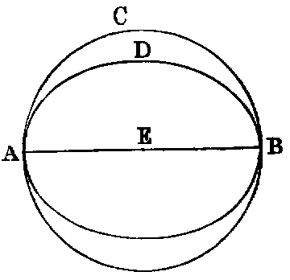
Dem.—1. If possible let two circles touch each other at two points A and B. Now since the two circles touch each other in A, the line joining their centres passes through A [xi.]. In like manner, it passes through B. Hence the centres and the points A, B are in one right line; therefore AB is a diameter of each circle. Hence, if AB be bisected in E, E must be the centre of each circle—that is, the circles are concentric—which [v.] is impossible.
2. If two circles touched each other externally in two distinct points, then [xii.] the line joining the centres should pass through each point, which is impossible.
Or thus: Draw a line bisecting AB at right angles. Then this line [i., Cor. 1] must pass through the centre of each circle, and therefore [xi. xii.] must pass through each point of contact, which is impossible. Hence two circles cannot have double contact.
This Proposition is an immediate inference from the theorem [xii., Cor. 1], that a point of contact counts for two intersections, for then two contacts would be equivalent to four intersections; but there cannot be more than two intersections [x.]. It also follows from Prop. xii., Cor. 2, that if two circles touch each other in a point A, they cannot have any other point common; hence they cannot touch again in B.
Exercises.
1. If a variable circle touch two fixed circles externally, the difference of the distances of its centre from the centres of the fixed circles is equal to the difference or the sum of their radii, according as the contacts are of the same or of opposite species (Def. iv.).
2. If a variable circle be touched by one of two fixed circles internally, and touch the other fixed circle either externally or internally, the sum of the distances of its centre from the centres of the fixed circles is equal to the sum or the difference of their radii, according as the contact with the second circle is of the first or second kind.
3. If through the point of contact of two touching circles any secant be drawn cutting the circles again in two points, the radii drawn to these points are parallel.
4. If two diameters of two touching circles be parallel, the lines from the point of contact to the extremities of one diameter pass through the extremities of the other.
PROP. XIV.—Theorem.
In equal circles—1. equal chords (AB, CD) are equally distant from the centre. 2. chords which are equally distant from the centre are equal.
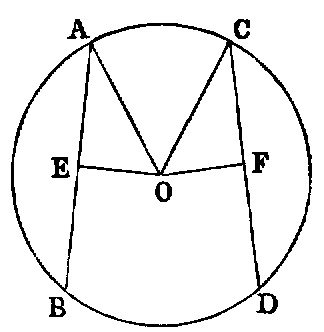
Dem.—1. Let O be the centre. Draw the perpendiculars OE, OF. Join AO, CO. Then because AB is a chord in a circle, and OE is drawn from the centre cutting it at right angles, it bisects it [iii.]; therefore AE is the half of AB. In like manner, CF is the half of CD; but AB is equal to CD (hyp.). Therefore AE is equal to CF [I., Axiom vii.]. And because E is a right angle, AO2 is equal to AE2 + EO2. In like manner, CO2 is equal to CF2 + FO2; but AO2 is equal to CO2. Therefore AE2 + EO2 is equal to CF2 + FO2; and AE2 has been proved equal to CF2. Hence EO2 is equal to FO2; therefore EO is equal to FO. Hence AB, CD are (Def. vi.) equally distant from the centre.
2. Let EO be equal to FO, it is required to prove AB equal to CD. The same construction being made, we have, as before, AE2 + EO2 equal to CF2 + FO2; but EO2 is equal to FO2 (hyp.). Hence AE2 is equal to CF2, and AE is equal to CF; but AB is double of AE, and CD double of CF. Therefore AB is equal to CD.
Exercise.
If a chord of given length slide round a fixed circle—1. the locus of its middle point is a circle; 2. the locus of any point fixed in the chord is a circle.
PROP. XV.—Theorem.
The diameter (AB) is the greatest chord in a circle; and of the others, the chord (CD) which is nearer to the centre is greater than (EF) one more remote, and the greater is nearer to the centre than the less.
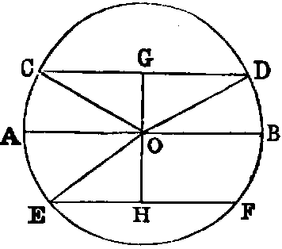
Dem.—1. Join OC, OD, OE, and draw the perpendiculars OG, OH; then because O is the centre, OA is equal to OC [I., Def. xxxii.], and OB is equal to OD. Hence AB is equal to the sum of OC and OD; but the sum of OC, OD is greater than CD [I. xx.]. Therefore AB is greater than CD.
2. Because the chord CD is nearer to the centre than EF, OG is less than OH; and since the triangles OGC, OHE are right-angled, we have OC2 = OG2 + GC2, and OE2 = OH2 + HE2; therefore OG2 + GC2 = OH2 + HE2; but OG2 is less than OH2; therefore GC2 is greater than HE2, and GC is greater than HE, but CD and EF are the doubles of GC and HE. Hence CD is greater than EF.
3. Let CD be greater than EF, it is required to prove that OG is less than OH.
As before, we have OG2 + GC2 equal to OH2 + HE2; but CG2 is greater than EH2; therefore OG2 is less than OH2. Hence OG is less than OH.
Exercises.
1. The shortest chord which can be drawn through a given point within a circle is the perpendicular to the diameter which passes through that point.
2. Through a given point, within or without a given circle, draw a chord of length equal to that of a given chord.
3. Through one of the points of intersection of two circles draw a secant—1. the sum of whose segments intercepted by the circles shall be a maximum; 2. which shall be of any length less than that of the maximum.
4. Three circles touch each other externally at A, B, C; the chords AB, AC of two of them are produced to meet the third again in the points D and E; prove that DE is a diameter of the third circle, and parallel to the line joining the centres of the others.
PROP. XVI.—Theorem.
1. The perpendicular (BI) to the diameter (AB) of a circle at its extremity (B) touches the circle at that point. 2. Any other line (BH) through the same point cuts the circle.
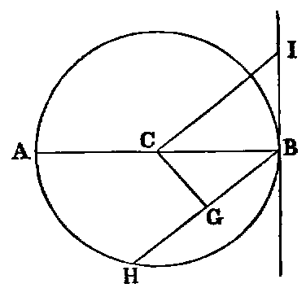
Dem.—1. Take any point I, and join it to the centre C. Then because the angle CBI is a right angle, CI2 is equal to CB2 + BI2 [I. xlvii.]; therefore CI2 is greater than CB2. Hence CI is greater than CB, and the point I [note on I., Def. xxxii.] is without the circle. In like manner, every other point in BI, except B, is without the circle. Hence, since BI meets the circle at B, but does not cut it, it must touch it.
2. To prove that BH, which is not perpendicular to AB, cuts the circle. Draw CG perpendicular to HB. Now BC2 is equal to CG2 + GB2. Therefore BC2 is greater than CG2, and BC is greater than CG. Hence [note on I., Def. xxxii.] the point G must be within the circle, and consequently the line BG produced must meet the circle again, and must therefore cut it.
This Proposition may be proved as follows:
At every point on a circle the tangent is perpendicular to the radius.
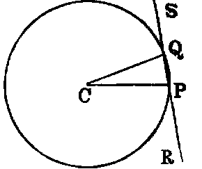
Let P and Q be two consecutive points on the circumference. Join CP, CQ, PQ; produce PQ both ways. Now since P and Q are consecutive points, PQ is a tangent (Def. iii.). Again, the sum of the three angles of the triangle CPQ is equal to two right angles; but the angle C is infinitely small, and the others are equal. Hence each of them is a right angle. Therefore the tangent is perpendicular to the diameter.
Or thus: A tangent is a limiting position of a secant, namely, when the secant moves out until the two points of intersection with the circle become consecutive; but the line through the centre which bisects the part of the secant within the circle [iii.] is perpendicular to it. Hence, in the limit the tangent is perpendicular to the line from the centre to the point of contact.
Or again: The angle CPR is always equal to CQS; hence, when P and Q come together each is a right angle, and the tangent is perpendicular to the radius.
Exercises.
1. If two circles be concentric, all chords of the greater which touch the lesser are equal.
2. Draw a parallel to a given line to touch a given circle.
3. Draw a perpendicular to a given line to touch a given circle.
4. Describe a circle having its centre at a given point—1. and touching a given line; 2. and touching a given circle. How many solutions of this case?
5. Describe a circle of given radius that shall touch two given lines. How many solutions?
6. Find the locus of the centres of a system of circles touching two given lines.
7. Describe a circle of given radius that shall touch a given circle and a given line, or that shall touch two given circles.
PROP. XVII.—Problem.
From a given point (P) without a given circle (BCD) to draw a tangent to the circle.
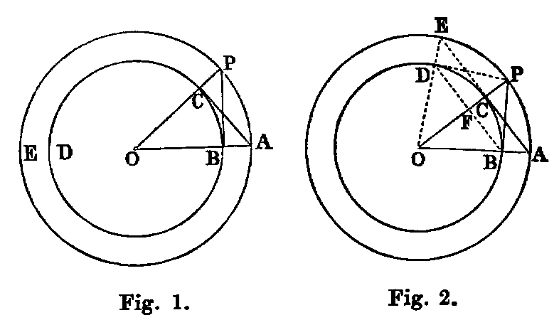
Sol.—Let O (fig. 1) be the centre of the given circle. Join OP, cutting the circumference in C. With O as centre, and OP as radius, describe the circle APE. Erect CA at right angles to OP. Join OA, intersecting the circle BCD in B. Join BP; it will be the tangent required.
Dem.—Since O is the centre of the two circles, we have OA equal to OP, and OC equal to OB. Hence the two triangles AOC, POB have the sides OA, OC in one respectively equal to the sides OP, OB in the other, and the contained angle common to both. Hence [I. iv.] the angle OCA is equal to OBP; but OCA is a right angle (const.); therefore OBP is a right angle, and [xvi.] PB touches the circle at B.
Cor.—If AC (fig. 2) be produced to E, OE joined, cutting the circle BCD in D, and the line DP drawn, DP will be another tangent from P.
Exercises.
1. The two tangents PB, PD (fig. 2) are equal to one another, because the square of each is equal to the square of OP minus the square of the radius.
2. If two circles be concentric, all tangents to the inner from points on the outer are equal.
3. If a quadrilateral be circumscribed to a circle, the sum of one pair of opposite sides is equal to the sum of the other pair.
4. If a parallelogram be circumscribed to a circle it must be a lozenge, and its diagonals intersect in the centre.
5. If BD be joined, intersecting OP in F, OP is perpendicular to BD.
6. The locus of the intersection of two equal tangents to two circles is a right line (called the radical axis of the two circles).
7. Find a point such that tangents from it to three given circles shall be equal. (This point is called the radical centre of the three circles.)
8. The rectangle OF.OP is equal to the square of the radius.
Def. Two points, such as F and P, the rectangle of whose distances OF, OP from the centre is equal to the square of the radius, are called inverse points with respect to the circle.
9. The intercept made on a variable tangent by two fixed tangents subtends a constant angle at the centre.
10. Draw a common tangent to two circles. Hence, show how to draw a line cutting two circles, so that the intercepted chords shall be of given lengths.
PROP. XVIII.—Theorem
If a line (CD) touch a circle, the line (OC) from the centre to the point of contact is perpendicular to it.
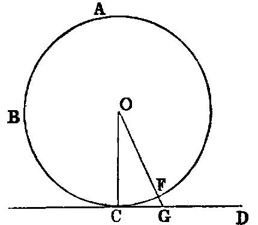
Dem.—If not, suppose another line OG drawn from the centre to be perpendicular to CD. Let OG cut the circle in F. Then because the angle OGC is right (hyp.) the angle OCG [I. xvii.] must be acute. Therefore [I. xix.] OC is greater than OG; but OC is equal to OF [I. Def. xxxii.]; therefore OF is greater than OG—that is, a part greater than the whole, which is impossible. Hence OC must be perpendicular to CD.
Or thus: Since the perpendicular must be the shortest line from O to CD, and OC is evidently the shortest line; therefore OC must be perpendicular to CD.
PROP. XIX.—Theorem.
If a line (AB) be a tangent to a circle, the line (AC) drawn at right angles to it from the point of contact passes through the centre.
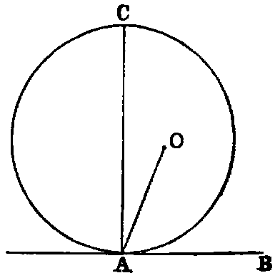
If the centre be not in AC, let O be the centre. Join AO. Then because AB touches the circle, and OA is drawn from the centre to the point of contact, OA is at right angles to AB [xviii.]; therefore the angle OAB is right, and the angle CAB is right (hyp.); therefore OAB is equal to CAB—a part equal to the whole, which is impossible. Hence the centre must be in the line AC.
Cor.—If a number of circles touch the same line at the same point, the locus of their centres is the perpendicular to the line at the point.
Observation.—Propositions xvi., xviii., xix., are so related that any two can be inferred from the third by the “Rule of Identity.” Hence it would, in strict logic, be sufficient to prove any one of the three, and the others would follow. Again, these three theorems are limiting cases of Proposition i., Cor. 1., and Parts 1, 2, of Proposition iii., namely, when the points in which the chord cuts the circle become consecutive.
PROP. XX.—Theorem.
The angle (AOB) at the centre (O) of a circle is double the angle (ACB) at the circumference standing on the same arc.
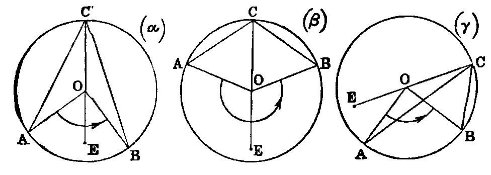
Dem.—Join CO, and produce it to E. Then because OA is equal to OC, the angle ACO is equal to OAC; but the angle AOE is equal to the sum of the two angles OAC, ACO. Hence the angle AOE is double the angle ACO. In like manner the angle EOB is double the angle OCB. Hence (by adding in figs. (α), (β), and subtracting in (γ)), the angle AOB is double of the angle ACB.
Cor.—If AOB be a straight line, ACB will be a right angle—that is, the angle in a semicircle is a right angle (compare xxxi.).
PROP. XXI.—Theorem.
The angles (ACB, ADB) in the same segment of a circle are equal.
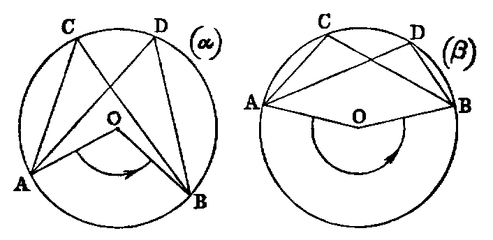
Dem.—Let O be the centre. Join OA, OB. Then the angle AOB is double of the angle ACB [xx.], and also double of the angle ADB. Therefore the angle ACB is equal to the angle ADB.
The following is the proof of the second part—that is, when the arc AB is not greater than a semicircle, without using angles greater than two right angles:—
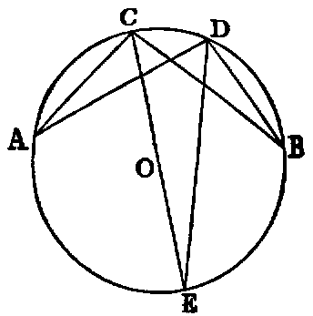
Let O be the centre. Join CO, and produce it to meet the circle again in E. Join DE. Now since O is the centre, the segment ACE is greater than a semicircle; hence, by the first case, fig. (α), the angle ACE is equal to ADE. In like manner the angle ECB is equal to EDB. Hence the whole angle ACB is equal to the whole angle ADB.
Cor. 1.—If two triangles ACB, ADB on the same base AB, and on the same side of it, have equal vertical angles, the four points A, C, D, B are concyclic.
Cor. 2.—If A, B be two fixed points, and if C varies its position in such a way that the angle ACB retains the same value throughout, the locus of C is a circle.
In other words—Given the base of a triangle and the vertical angle, the locus of the vertex is a circle.
Exercises.
1. Given the base of a triangle and the vertical angle, find the locus—
(1) of the intersection of its perpendiculars;
(2) of the intersection of the internal bisectors of its base angles;
(3) of the intersection of the external bisectors of the base angles;
(4) of the intersection of the external bisector of one base angle and the internal bisector of the other.
2. If the sum of the squares of two lines be given, their sum is a maximum when the lines are equal.
3. Of all triangles having the same base and vertical angle, the sum of the sides of an isosceles triangle is a maximum.
4. Of all triangles inscribed in a circle, the equilateral triangle has the maximum perimeter.
5. Of all concyclic figures having a given number of sides, the area is a maximum when the sides are equal.
PROP. XXII.—Theorem.
The sum of the opposite angles of a quadrilateral (ABCD) inscribed in a circle is two right angles.
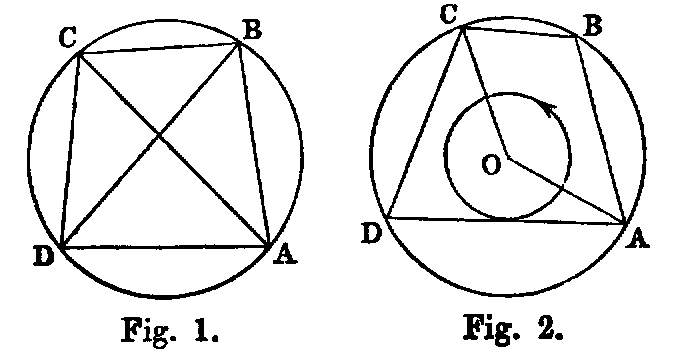
Dem.—Join AC, BD. The angle ABD is equal to ACD, being in the same segment ABCD [xxi.]; and the angle DBC is equal to DAC, because they are in the same segment DABC. Hence the whole angle ABC is equal to the sum of the two angles ACD, DAC. To each add the angle CDA, and we have the sum of the two angles ABC, CDA equal to the sum of the three angles ACD, DAC, CDA of the triangle ACD; but the sum of the three angles of a triangle is equal to two right angles [I. xxxii.]. Therefore the sum of ABC, CDA is two right angles.
Or thus: Let O be the centre of the circle. Join OA, OC (see fig. 2). Now the angle AOC is double of CDA [xx.], and the angle COA is double of ABC. Hence the sum of the angles [I. Def. ix., note] AOC, COA is double of the sum of the angles CDA, ABC; but the sum of two angles AOC, COA is four right angles. Therefore the sum of the angles CDA, ABC is two right angles.
Or again: Let O be the centre (fig. 2). Join OA, OB OC, OD. Then the four triangles AOB, BOC, COD, DOA are each isosceles. Hence the angle OAB is equal to the angle OBA, and the angle OAD equal to the angle ODA; therefore the angle BAD is equal to the sum of the angles OBA, ODA. In like manner the angle BCD is equal to the sum of the angles OBC, ODC. Hence the sum of the two angles BAD, BCD is equal to the sum of the two angles ABC, ADC, and hence each sum is two right angles.
Cor.—If a parallelogram be inscribed in a circle it is a rectangle.
Exercises.
1. If the opposite angles of a quadrilateral be supplemental, it is cyclic.
2. If a figure of six sides be inscribed in a circle, the sum of any three alternate angles is four right angles.
3. A line which makes equal angles with one pair of opposite sides of a cyclic quadrilateral, makes equal angles with the remaining pair and with the diagonals.
4. If two opposite sides of a cyclic quadrilateral be produced to meet, and a perpendicular be let fall on the bisector of the angle between them from the point of intersection of the diagonals, this perpendicular will bisect the angle between the diagonals.
5. If two pairs of opposite sides of a cyclic hexagon be respectively parallel to each other, the remaining pair of sides are also parallel.
6. If two circles intersect in the points A, B, and any two lines ACD, BFE, be drawn through A and B, cutting one of the circles in the points C, E, and the other in the points D, F, the line CE is parallel to DF.
7. If equilateral triangles be described on the sides of any triangle, the lines joining the vertices of the original triangle to the opposite vertices of the equilateral triangles are concurrent.
8. In the same case prove that the centres of the circles described about the equilateral triangles form another equilateral triangle.
9. If a quadrilateral be described about a circle, the angles at the centre subtended by the opposite sides are supplemental.
10. The perpendiculars of a triangle are concurrent.
11. If a variable tangent meets two parallel tangents it subtends a right angle at the centre.
12. The feet of the perpendiculars let fall on the sides of a triangle from any point in the circumference of the circumscribed circle are collinear (Simson).
Def.—The line of collinearity is called Simson’s line.
13. If a hexagon be circumscribed about a circle, the sum of the angles subtended at the centre by any three alternate sides is equal to two right angles.
PROP. XXIII—Theorem.
Two similar segments of circles which do not coincide cannot be constructed on the same chord (AB), and on the same side of that chord.
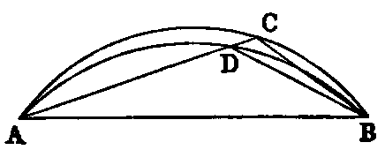
Dem.—If possible, let ACB, ADB, be two similar segments constructed on the same side of AB. Take any point D in the inner one. Join AD, and produce it to meet the outer one in C. Join BC, BD. Then since the segments are similar, the angle ADB is equal to ACB (Def. x.), which is impossible [I. xvi.]. Hence two similar segments not coinciding cannot be described on the same chord and on the same side of it.
PROP. XXIV.—Theorem.
Similar segments of circles (AEB, CFD) on equal chords (AB, CD) are equal to one another.
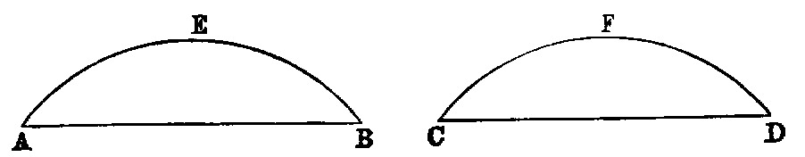
Dem.—Since the lines are equal, if AB be applied to CD, so that the point A will coincide with C, and the line AB with CD, the point B shall coincide with D; and because the segments are similar, they must coincide [xxiii.]. Hence they are equal.
This demonstration may be stated as follows:—Since the chords are equal, they are congruent; and therefore the segments, being similar, must be congruent.
PROP. XXV.—Problem.
An arc (ABC) of a circle being given, it is required to describe the whole circle.
Sol.—Take any three points A, B, C in the arc. Join AB, BC. Bisect AB in D, and BC in E. Erect DF, EF at right angles to AB, BC; then F, the point of intersection, will be the centre of the circle.
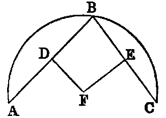
Dem.—Because DF bisects the chord AB and is perpendicular to it, it passes through the centre [i., Cor. 1]. In like manner EF passes through the centre. Hence the point F must be the centre; and the circle described from F as centre, with FA as radius, will be the circle required.
PROP. XXVI.—Theorem.
The four Propositions xxvi.–xxix. are so like in their enunciations that students frequently substitute one for another. The following scheme will assist in remembering them:—
| In Proposition | xxvi. are | given | angles | =, to | prove | arcs | =, |
|---|---|---|---|---|---|---|---|
| ,, | xxvii. | ,, | arcs | =, | ,, | angles | =, |
| ,, | xxviii. | ,, | chords | =, | ,, | arcs | =, |
| ,, | xxix. | ,, | arcs | =, | ,, | chords | =; |
so that Proposition xxvii. is the converse of xxvi., and xxix. of xxviii.
In equal circles (ACB, DFE), equal angles at the centres (AOB, DHE) or at the circumferences (ACB, DFE) stand upon equal arcs.
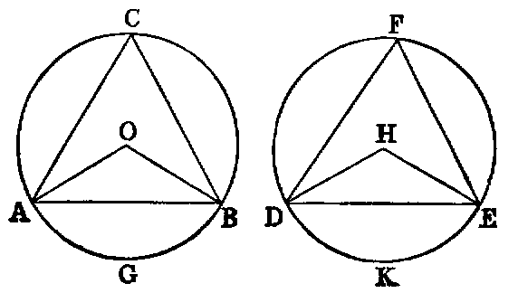
Dem.—1. Suppose the angles at the centres to be given equal. Now because the circles are equal their radii are equal (Def. i.). Therefore the two triangles AOB, DHE have the sides AO, OB in one respectively equal to the sides DH, HE in the other, and the angle AOB equal to DHE (hyp.). Therefore [I. iv.] the base AB is equal to DE.
Again, since the angles ACB, DFE are [xx.] the halves of the equal angles AOB, DHE, they are equal [I. Axiom vii.]. Therefore (Def. x.) the segments ACB, DFE are similar, and their chords AB, DE have been proved equal; therefore [xxiv.] the segments are equal. And taking these equals from the whole circles, which are equal (hyp.), the remaining segments AGB, DKE are equal. Hence the arcs AGB, DKE are equal.
2. The demonstration of this case is included in the foregoing.
Cor. 1.—If the opposite angles of a cyclic quadrilateral be equal, one of its diagonals must be a diameter of the circumscribed circle.
Cor. 2.—Parallel chords in a circle intercept equal arcs.
Cor. 3.—If two chords intersect at any point within a circle, the sum of the opposite arcs which they intercept is equal to the arc which parallel chords intersecting on the circumference intercept. 2. If they intersect without the circle, the difference of the arcs they intercept is equal to the arc which parallel chords intersecting on the circumference intercept.
Cor. 4.—If two chords intersect at right angles, the sum of the opposite arcs which they intercept on the circle is a semicircle.
PROP. XXVII.—Theorem.
In equal circles (ACB, DFE), angles at the centres (AOB, DHE), or at the circumferences (ACB, DFE), which stand on equal arcs (AB, DE), are equal.
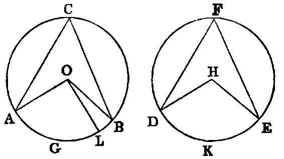
Dem.—If possible let one of them, such as AOB, be greater than the other, DHE; and suppose a part such as AOL to be equal to DHE. Then since the circles are equal, and the angles AOL, DHE at the centres are equal (hyp.), the arc AL is equal to DE [xxvi.]; but AB is equal to DE (hyp.). Hence AL is equal to AB—that is, a part equal to the whole, which is absurd. Therefore the angle AOB is equal to DHE.
2. The angles at the circumference, being the halves of the central angles, are therefore equal.
PROP. XXVIII.—Theorem.
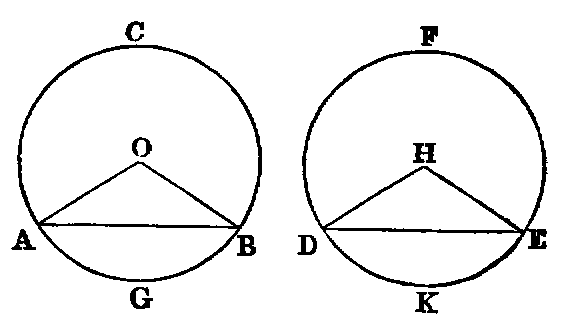
In equal circles (ACB, DFE), equal chords (AB, DE) divide the circumferences into arcs, which are equal each to each—that is, the lesser to the lesser, and the greater to the greater.
Dem.—If the equal chords be diameters, the Proposition is evident. If not, let O, H be the centres. Join AO, OB, DH, HE; then because the circles are equal their radii are equal (Def. i.). Hence the two triangles AOB, DHE have the sides AO, OB in one respectively equal to the sides DH, HE in the other, and the base AB is equal to DE (hyp.). Therefore [I. viii.] the angle AOB is equal to DHE. Hence the arc AGB is equal to DKE [xxvi.]; and since the whole circumference AGBC is equal to the whole circumference DKEF, the remaining arc ACB is equal to the remaining arc DFE.
Exercises.
1. The line joining the feet of perpendiculars from any point in the circumference of a circle, on two diameters given in position, is given in magnitude.
2. If a line of given length slide between two lines given in position, the locus of the intersection of perpendiculars to the given lines at its extremities is a circle. (This is the converse of 1.)
PROP. XXIX.—Theorem.
In equal circles (ACB, DFE), equal arcs (AGB, DCK) are subtended by equal chords.
Dem.—Let O, H be the centres (see last fig.). Join AO, OB, DH, HE; then because the circles are equal, the angles AOB, DHE at the centres, which stand on the equal arcs AGB, DKE, are equal [xxvii.]. Again, because the triangles AOB, DHE have the two sides AO, OB in one respectively equal to the two sides DH, HE in the other, and the angle AOB equal to the angle DHE, the base AB of one is equal to the base DE of the other.
Observation.—Since the two circles in the four last Propositions are equal, they are congruent figures, and the truth of the Propositions is evident by superposition.
PROP. XXX.—Problem.
To bisect a given arc ACB.
Sol.—Draw the chord AB; bisect it in D; erect DC at right angles to AB, meeting the arc in C; then the arc is bisected in C.
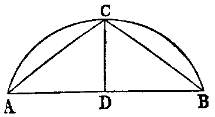
Dem.—Join AC, BC. Then the triangles ADC, BDC have the side AD equal to DB (const.), and DC common to both, and the angle ADC equal to the angle BDC, each being right. Hence the base AC is equal to the base BC. Therefore [xxviii.] the arc AC is equal to the arc BC. Hence the arc AB is bisected in C.
Exercises.
1. ABCD is a semicircle whose diameter is AD; the chord BC produced meets AD produced in E: prove that if CE is equal to the radius, the arc AB is equal to three times CD.
2. The internal and the external bisectors of the vertical angle of a triangle inscribed in a circle meet the circumference again in points equidistant from the extremities of the base.
3. If from A, one of the points of intersection of two given circles, two chords ACD, AC′D′ be drawn, cutting the circles in the points C, D; C′, D′, the triangles BCD, BC′D′, formed by joining these to the second point B of intersection of the circles, are equiangular.
4. If the vertical angle ACB of a triangle inscribed in a circle be bisected by a line CD, which meets the circle again in D, and from D perpendiculars DE, DF be drawn to the sides, one of which must be produced: prove that EA is equal to BF, and hence show that CE is equal to half the sum of AC, BC.
PROP. XXXI.—Theorem.
In a circle—(1). The angle in a semicircle is a right angle. (2). The angle in a segment greater than a semicircle is an acute angle. (3). The angle in a segment less than a semicircle is an obtuse angle.
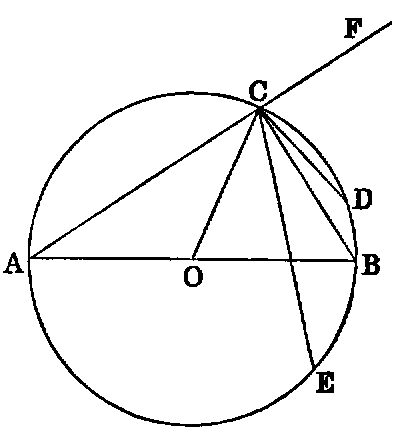
Dem.—(1). Let AB be the diameter, C any point in the semicircle. Join AC, CB. The angle ACB is a right angle.
For let O be the centre. Join OC, and produce AC to F. Then because AO is equal to OC, the angle ACO is equal to the angle OAC. In like manner, the angle OCB is equal to CBO. Hence the angle ACB is equal to the sum of the two angles BAC, CBA; but [I. xxxii.] the angle FCB is equal to the sum of the two interior angles BAC, CBA of the triangle ABC. Hence the angle ACB is equal to its adjacent angle FCB, and therefore it is a right angle [I. Def. xiii.].
(2). Let the arc ACE be greater than a semicircle. Join CE. Then the angle ACE is evidently less than ACB; but ACB is right; therefore ACE is acute.
(3). Let the arc ACD be less than a semicircle; then evidently, from (1), the angle ACD is obtuse.
Cor. 1.—If a parallelogram be inscribed in a circle, its diagonals intersect at the centre of the circle.
Cor. 2.—Find the centre of a circle by means of a carpenter’s square.
Cor. 3.—From a point outside a circle draw two tangents to the circle.
PROP. XXXII.—Theorem.
If a line (EF) be a tangent to a circle, and from the point of contact (A) a chord (AC) be drawn cutting the circle, the angles made by this line with the tangent are respectively equal to the angles in the alternate segments of the circle.
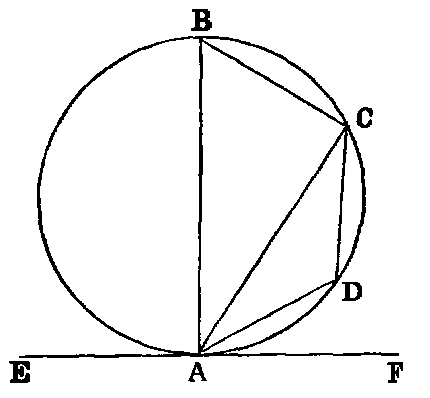
Dem.—(1). If the chord passes through the centre, the Proposition is evident, for the angles are right angles; but if not, from the point of contact A draw AB at right angles to the tangent. Join BC. Then because EF is a tangent to the circle, and AB is drawn from the point of contact perpendicular to EF, AB passes through this centre [xix.]. Therefore the angle ACB is right [xxxi.]. Hence the sum of the two remaining angles ABC, CAB is one right angle; but the angle BAF is right (const.); therefore the sum of the angles ABC, BAC is equal to BAF. Reject BAC, which is common, and we get the angle ABC equal to the angle FAC.
(2). Take any point D in the arc AC. It is required to prove that the angle CAE is equal to CDA.
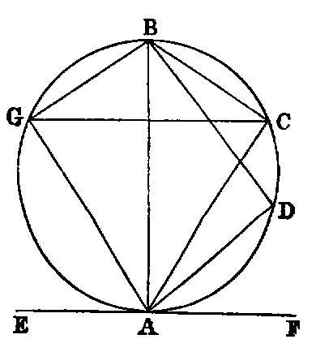
Since the quadrilateral ABCD is cyclic, the sum of the opposite angles ABC, CDA is two right angles [xxii.], and therefore equal to the sum of the angles FAC, CAE; but the angles ABC, FAC are equal (1). Reject them, and we get the angle CDA equal to CAE.
Or thus: Take any point G in the semicircle AGB. Join AG, GB, GC. Then the angle AGB = FAB, each being right, and CGB = CAB [xxi.]. Therefore the remaining angle AGC = FAC. Again, join BD, CD. The angle BDA = BAE, each being right, and CDB = CAB [xxi.]. Hence the angle CDA = CAE.—Lardner.
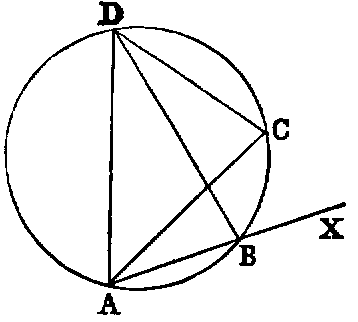
Or by the method of limits, see Townsend’s Modern Geometry, vol. i., page 14.
The angle BAC is equal to BDC [xxi.]. Now let the point B move until it becomes consecutive to A; then AB will be a tangent, and BD will coincide with AD, and the angle BDC with ADC. Hence, if AX be a tangent at A, AC any chord, the angle which the tangent makes with the chord is equal to the angle in the alternate segment.
Exercises.
1. If two circles touch, any line drawn through the point of contact will cut off similar segments.
2. If two circles touch, and any two lines be drawn through the point of contact, cutting both circles again, the chord connecting their points of intersection with one circle is parallel to the chord connecting their points of intersection with the other circle.
3. ACB is an arc of a circle, CE a tangent at C, meeting the chord AB produced in E, and AD a perpendicular to AB in D: prove, if DE be bisected in C, that the arc AC = 2CB.
4. If two circles touch at a point A, and ABC be a chord through A, meeting the circles in B and C: prove that the tangents at B and C are parallel to each other, and that when one circle is within the other, the tangent at B meets the outer circle in two points equidistant from C.
5. If two circles touch externally, their common tangent at either side subtends a right angle at the point of contact, and its square is equal to the rectangle contained by their diameters.
PROP. XXXIII.—Problem.
On a given right line (AB) to describe a segment of a circle which shall contain an angle equal to a given rectilineal angle (X).
Sol.—If X be a right angle, describe a semicircle on the given line, and the thing required is done; for the angle in a semicircle is a right angle.
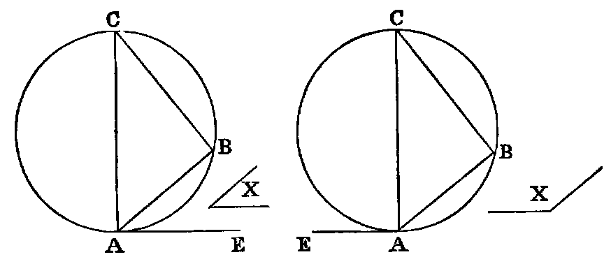
If not, make with the given line AB the angle BAE equal to X. Erect AC at right angles to AE, and BC at right angles to AB. On AC as diameter describe a circle: it will be the circle required.
Dem.—The circle on AC as diameter passes through B, since the angle ABC is right [xxxi.] and touches AE, since the angle CAE is right [xvi.]. Therefore the angle BAE [xxxii.] is equal to the angle in the alternate segment; but the angle BAE is equal to the angle X (const.). Therefore the angle X is equal to the angle in the segment described on AB.
Exercises.
1. Construct a triangle, being given base, vertical angle, and any of the following data:—1. Perpendicular. 2. The sum or difference of the sides. 3. Sum or difference of the squares of the sides. 4. Side of the inscribed square on the base. 5. The median that bisects the base.
2. If lines be drawn from a fixed point to all the points of the circumference of a given circle, the locus of all their points of bisection is a circle.
3. Given the base and vertical angle of a triangle, find the locus of the middle point of the line joining the vertices of equilateral triangles described on the sides.
4. In the same case, find the loci of the angular points of a square described on one of the sides.
PROP. XXXIV.—Problem.
To cut off from a given circle (ABC) a segment which shall contain an angle equal to a given angle (X).
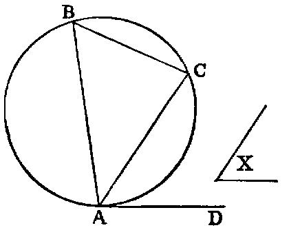
Sol.—Take any point A in the circumference. Draw the tangent AD, and make the angle DAC equal to the given angle X. AC will cut off the required segment.
Dem.—Take any point B in the alternate segment. Join BA, BC. Then the angle DAC is equal to ABC [xxxii.]; but DAC is equal to X (const.). Therefore the angle ABC is equal to X.
PROP. XXXV.—Theorem.
If two chords (AB, CD) of a circle intersect in a point (E) within the circle, the rectangles (AE.EB, CE.ED) contained by the segments are equal.
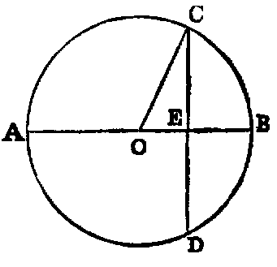
Dem.—1. If the point of intersection be the centre, each rectangle is equal to the square of the radius. Hence they are equal.
2. Let one of the chords AB pass through the centre O, and cut the other chord CD, which does not pass through the centre, at right angles. Join OC. Now because AB passes through the centre, and cuts the other chord CD, which does not pass through the centre at right angles, it bisects it [iii.]. Again, because AB is divided equally in O and unequally in E, the rectangle AE.EB, together with OE2, is equal to OB2—that is, to OC2 [II. v.]; but OC2 is equal to OE2 + EC2 [I. xlvii.] Therefore
Reject OE2, which is common, and we have AE.EB = EC2; but CE2 is equal to the rectangle CE.ED, since CE is equal to ED. Therefore the rectangle AE.EB is equal to the rectangle CE.ED.
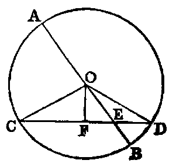
3. Let AB pass through the centre, and cut CD, which does not pass through the centre obliquely. Let O be the centre. Draw OF perpendicular to CD [I. xi.]. Join OC, OD. Then, since CD is cut at right angles by OF, which passes through the centre, it is bisected in F [iii.], and divided unequally in E. Hence
| CE.ED + FE2 | = FD2 [II. v.], | ||||||||||
|---|---|---|---|---|---|---|---|---|---|---|---|
| and | OF2 | = OF2. |
Hence, adding, since FE2 + OF2 = OE2 [I. xlvii.], and FD2 + OF2 = OD2, we get
Again, since AB is bisected in O and divided unequally in E,
| AE.EB + OE2 | = OB2 [II. v.]. | ||||||||||
|---|---|---|---|---|---|---|---|---|---|---|---|
| Therefore | CE.ED + OE2 | = AE.EB + OE2. | |||||||||
| Hence | CE.ED | = AE.EB. |
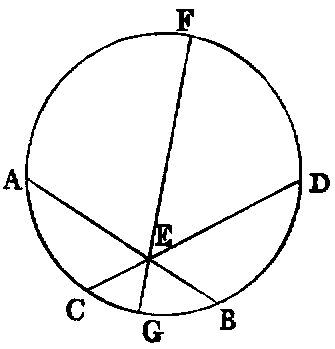
4. Let neither chord pass through the centre. Through the point E, where they intersect, draw the diameter FG. Then by 3, the rectangle FE.EG is equal to the rectangle AE.EB, and also to the rectangle CE.ED. Hence the rectangle AE.EB is equal to the rectangle CE.ED.
Cor. 1.—If a chord of a circle be divided in any point within the circle, the rectangle contained by its segments is equal to the difference between the square of the radius and the square of the line drawn from the centre to the point of section.
Cor. 2.—If the rectangle contained by the segments of one of two intersecting lines be equal to the rectangle contained by the segments of the other, the four extremities are concyclic.
Cor. 3.—If two triangles be equiangular, the rectangle contained by the non-corresponding sides about any two equal angles are equal.
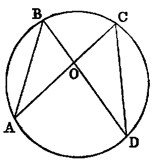
Let ABO, DCO be the equiangular triangles, and let them be placed so that the equal angles at O may be vertically opposite, and that the non-corresponding sides AO, CO may be in one line; then the non-corresponding sides BO, OD shall be in one line. Now, since the angle ABD is equal to ACD, the points A, B, C, D are concyclic [xxi., Cor. 1]. Hence the rectangle AO.OC is equal to the rectangle BO.OD [xxxv.].
Exercises.
1. In any triangle, the rectangle contained by two sides is equal to the rectangle contained by the perpendicular on the third side and the diameter of the circumscribed circle.
Def.—The supplement of an arc is the difference between it and a semicircle.
2. The rectangle contained by the chord of an arc and the chord of its supplement is equal to the rectangle contained by the radius and the chord of twice the supplement.
3. If the base of a triangle be given, and the sum of the sides, the rectangle contained by the perpendiculars from the extremities of the base on the external bisector of the vertical angle is given.
4. If the base and the difference of the sides be given, the rectangle contained by the perpendiculars from the extremities of the base on the internal bisector is given.
5. Through one of the points of intersection of two circles draw a secant, so that the rectangle contained by the intercepted chords may be given, or a maximum.
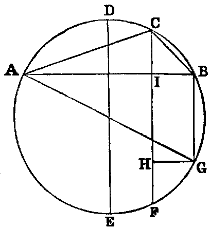
6. If the sum of two arcs, AC, CB of a circle be less than a semicircle, the rectangle AC.CB contained by their chords is equal to the rectangle contained by the radius, and the excess of the chord of the supplement of their difference above the chord of the supplement of their sum.—Catalan.
Dem.—Draw DE, the diameter which is perpendicular to AB, and draw the chords CF, BG parallel to DE. Now it is evident that the difference between the arcs AC, CB is equal to 2CD, and therefore = CD + EF. Hence the arc CBF is the supplement of the difference, and CF is the chord of that supplement. Again, since the angle ABG is right, the arc ABG is a semicircle. Hence BG is the supplement of the sum of the arcs AC, CB; therefore the line BG is the chord of the supplement of the sum. Now (Ex. 1), the rectangle AC.CB is equal to the rectangle contained by the diameter and CI, and therefore equal to the rectangle contained by the radius and 2CI; but the difference between CF and BG is evidently equal to 2CI. Hence the rectangle AC.CB is equal to the rectangle contained by the radius and the difference between the chords CF, BG.
7. If we join AF, BF we find, as before, the rectangle AF.FB equal to the rectangle contained by the radius and 2FI—that is, equal to the rectangle contained by the radius and the sum of CF and BG. Hence—If the sum of two arcs of a circle be greater than a semicircle, the rectangle contained by their chords is equal to the rectangle contained by the radius, and the sum of the chords of the supplements of their sum and their difference.
8. Through a given point draw a transversal cutting two lines given in position, so that the rectangle contained by the segments intercepted between it and the line may be given.
PROP. XXXVI.—Theorem.
If from any point (P) without a circle two lines be drawn to it, one of which (PT) is a tangent, and the other (PA) a secant, the rectangle (AP, BP) contained by the segments of the secant is equal to the square of the tangent.
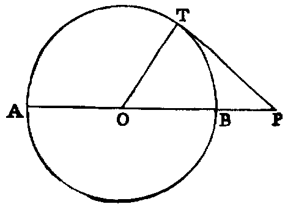
Dem.—1. Let PA pass through the centre O. Join OT. Then because AB is bisected in O and divided externally in P, the rectangle AP.BP + OB2 is equal to OP2 [II. vi.]. But since PT is a tangent, and OT drawn from the centre to the point of contact, the angle OTP is right [xviii.]. Hence OT2 + PT2 is equal to OP2.
| Therefore | AP.BP + OB2 | = OT2 + PT2; | |||||||||
|---|---|---|---|---|---|---|---|---|---|---|---|
| but | OB2 | = OT2. | |||||||||
| Hence the rectangle AP.BP | = PT2. |
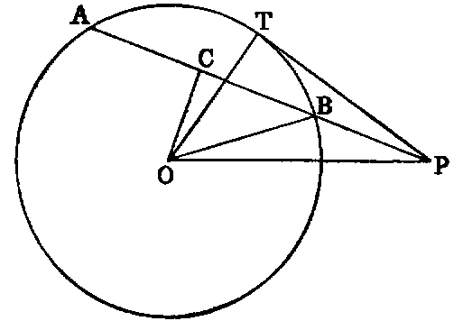
2. If AB does not pass through the centre O, let fall the perpendicular OC on AB. Join OT, OB, OP. Then because OC, a line through the centre, cuts AB, which does not pass through the centre at right angles, it bisects it [iii.]. Hence, since AB is bisected in C and divided externally in P, the rectangle
| AP.BP + CB2 | = CP2 [II. vi.]; | ||||||||||
|---|---|---|---|---|---|---|---|---|---|---|---|
| and | OC2 | = OC2. |
Hence, adding, since CB2 + OC2 = OB2 [I. xlvii.], and CP2 + OC2 = OP2, we get
| rectangle | AP.BP + OB2 | = OP2; | |||||||
|---|---|---|---|---|---|---|---|---|---|
| but | OT2 + PT2 | = OP2 [I. xlvii.]. | |||||||
| Therefore | AP.BP + OB2 | = OT2 + PT2; |
and rejecting the equals OB2 and OT2, we have the rectangle
The two Propositions xxxv., xxxvi., may be included in one enunciation, as follows:—The rectangle AP.BP contained by the segments of any chord of a given circle passing through a fixed point P, either within or without the circle, is constant. For let O be the centre: join OA, OB, OP. Then OAB is an isosceles triangle, and OP is a line drawn from its vertex to a point P in the base, or base produced. Then the rectangle AP.BP is equal to the difference of the squares of OB and OP, and is therefore constant.
Cor. 1.—If two lines AB, CD produced meet in P, and if the rectangle AP.BP = CP.DP, the points A, B, C, D are concyclic (compare xxxv., Cor. 2).
Cor. 2.—Tangents to two circles from any point in their common chord are equal (compare xvii., Ex. 6).
Cor. 3.—The common chords of any three intersecting circles are concurrent (compare xvii., Ex. 7).
Exercise.
If from the vertex A of a △ ABC, AD be drawn, meeting CB produced in D, and making the angle BAD = ACB, prove DB.DC = DA2.
PROP. XXXVII.—Theorem.
If the rectangle (AP.BP) contained by the segments of a secant, drawn from any point (P) without a circle, be equal to the square of a line (PT) drawn from the same point to meet the circle, the line which meets the circle is a tangent.
Dem.—From P draw PQ touching the circle [xvii.]. Let O be the centre. Join OP, OQ, OT. Now the rectangle AP.BP is equal to the square on PT (hyp.), and equal to the square on PQ [xxxvi.]. Hence PT2 is equal to PQ2, and therefore PT is equal to PQ. Again, the triangles OTP, OQP have the side OT equal OQ, TP equal QP, and the base OP common; hence [I. viii.] the angle OTP is equal to OQP; but OQP is a right angle, since PQ is a tangent [xviii.]; hence OTP is right, and therefore [xvi.] PT is a tangent.
Exercises.
1. Describe a circle passing through two given points, and fulfilling either of the following conditions: 1, touching a given line; 2, touching a given circle.
2. Describe a circle through a given point, and touching two given lines; or touching a given file and a given circle.
3. Describe a circle passing through a given point, having its centre on a given line and touching a given circle.
4. Describe a circle through two given points, and intercepting a given arc on a given circle.
5. A, B, C, D are four collinear points, and EF is a common tangent to the circles described upon AB, CD as diameters: prove that the triangles AEB, CFD are equiangular.
6. The diameter of the circle inscribed in a right-angled triangle is equal to half the sum of the diameters of the circles touching the hypotenuse, the perpendicular from the right angle of the hypotenuse, and the circle described about the right-angled triangle.
Questions for Examination on Book III.
1. What is the subject-matter of Book III.?
2. Define equal circles.
3. What is the difference between a chord and a secant?
4. When does a secant become a tangent?
5. What is the difference between a segment of a circle and a sector?
6. What is meant by an angle in a segment?
7. If an arc of a circle be one-sixth of the whole circumference, what is the magnitude of the angle in it?
8. What are linear segments?
9. What is meant by an angle standing on a segment?
10. What are concyclic points?
11. What is a cyclic quadrilateral?
12. How many intersections can a line and a circle have?
13. What does the line become when the points of intersection become consecutive?
14. How many points of intersection can two circles have?
15. What is the reason that if two circles touch they cannot have any other common point?
16. Give one enunciation that will include Propositions xi., xii. of Book III.
17. What Proposition is this a limiting case of?
18. Explain the extended meaning of the word angle.
19. What is Euclid’s limit of an angle?
20. State the relations between Propositions xvi., xviii., xix.
21. What Propositions are these limiting cases of?
22. How many common tangents can two circles have?
23. What is the magnitude of the rectangle of the segments of a chord drawn through a point 3.65 metres distant from the centre of a circle whose radius is 4.25 metres?
24. The radii of two circles are 4.25 and 1.75 feet respectively, and the distance between their centres 6.5 feet; find the lengths of their direct and their transverse common tangents.
25. If a point be h feet outside the circumference of a circle whose diameter is 7920 miles, prove that the length of the tangent drawn from it to the circle is miles.
26. Two parallel chords of a circle are 12 perches and 16 perches respectively, and their distance asunder is 2 perches; find the length of the diameter.
27. What is the locus of the centres of all circles touching a given circle in a given point?
28. What is the condition that must be fulfilled that four points may be concyclic?
29. If the angle in a segment of a circle be a right angle and a-half, what part of the whole circumference is it?
30. Mention the converse Propositions of Book III. which are proved directly.
31. What is the locus of the middle points of equal chords in a circle?
32. The radii of two circles are 6 and 8, and the distance between their centres 10; find the length of their common chord.
33. If a figure of any even number of sides be inscribed in a circle, prove that the sum of one set of alternate angles is equal to the sum of the remaining angles.
Exercises on Book III.
1. If two chords of a circle intersect at right angles, the sum of the squares on their segments is equal to the square on the diameter.
2. If a chord of a given circle subtend a right angle at a fixed point, the rectangle of the perpendiculars on it from the fixed point and from the centre of the given circle is constant. Also the sum of the squares of perpendiculars on it from two other fixed points (which may be found) is constant.
3. If through either of the points of intersection of two equal circles any line be drawn meeting them again in two points, these points are equally distant from the other intersection of the circles.
4. Draw a tangent to a given circle so that the triangle formed by it and two fixed tangents to the circle shall be—1, a maximum; 2, a minimum.
5. If through the points of intersection A, B of two circles any two lines ACD, BEF be drawn parallel to each other, and meeting the circles again in C, D, E, F; then CD = EF.
6. In every triangle the bisector of the greatest angle is the least of the three bisectors of the angles.
7. The circles whose diameters are the four sides of any cyclic quadrilateral intersect again in four concyclic points.
8. The four angular points of a cyclic quadrilateral determine four triangles whose orthocentres (the intersections of their perpendiculars) form an equal quadrilateral.
9. If through one of the points of intersection of two circles we draw two common chords, the lines joining the extremities of these chords make a given angle with each other.
10. The square on the perpendicular from any point in the circumference of a circle, on the chord of contact of two tangents, is equal to the rectangle of the perpendiculars from the same point on the tangents.
11. Find a point in the circumference of a given circle, the sum of the squares on whose distances from two given points may be a maximum or a minimum.
12. Four circles are described on the sides of a quadrilateral as diameters. The common chord of any two on adjacent sides is parallel to the common chord of the remaining two.
13. The rectangle contained by the perpendiculars from any point in a circle, on the diagonals of an inscribed quadrilateral, is equal to the rectangle contained by the perpendiculars from the same point on either pair of opposite sides.
14. The rectangle contained by the sides of a triangle is greater than the square on the internal bisector of the vertical angle, by the rectangle contained by the segments of the base.
15. If through A, one of the points of intersection of two circles, we draw any line ABC, cutting the circles again in B and C, the tangents at B and C intersect at a given angle.
16. If a chord of a given circle pass through a given point, the locus of the intersection of tangents at its extremities is a right line.
17. The rectangle contained by the distances of the point where the internal bisector of the vertical angle meets the base, and the point where the perpendicular from the vertex meets it from the middle point of the base, is equal to the square on half the difference of the sides.
18. State and prove the Proposition analogous to 17 for the external bisector of the vertical angle.
19. The square on the external diagonal of a cyclic quadrilateral is equal to the sum of the squares on the tangents from its extremities to the circumscribed circle.
20. If a variable circle touch a given circle and a given line, the chord of contact passes through a given point.
21. If A, B, C be three points in the circumference of a circle, and D, E the middle points of the arcs AB, AC; then if the line DE intersect the chords AB, AC in the points F, G, AF is equal to AG.
22. Given two circles, O, O′; then if any secant cut O in the points B, C, and O′ in the points B′, C′, and another secant cuts them in the points D, E; D′, E′ respectively; the four chords BD, CE, B′D′, C′E′ form a cyclic quadrilateral.
23. If a cyclic quadrilateral be such that a circle can be inscribed in it, the lines joining the points of contact are perpendicular to each other.
24. If through the point of intersection of the diagonals of a cyclic quadrilateral the minimum chord be drawn, that point will bisect the part of the chord between the opposite sides of the quadrilateral.
25. Given the base of a triangle, the vertical angle, and either the internal or the external bisector at the vertical angle; construct it.
26. If through the middle point A of a given arc BAC we draw any chord AD, cutting BC in E, the rectangle AD.AE is constant.
27. The four circles circumscribing the four triangles formed by any four lines pass through a common point.
28. If X, Y , Z be any three points on the three sides of a triangle ABC, the three circles about the triangles Y AZ, ZBX, XCY pass through a common point.
29. If the position of the common point in the last question be given, the three angles of the triangle XY Z are given, and conversely.
30. Place a given triangle so that its three sides shall pass through three given points.
31. Place a given triangle so that its three vertices shall lie on three given lines.
32. Construct the greatest triangle equiangular to a given one whose sides shall pass through three given points.
33. Construct the least triangle equiangular to a given one whose vertices shall lie on three given lines.
34. Construct the greatest triangle equiangular to a given one whose sides shall touch three given circles.
35. If two sides of a given triangle pass through fixed points, the third touches a fixed circle.
36. If two sides of a given triangle touch fixed circles, the third touches a fixed circle.
37. Construct an equilateral triangle having its vertex at a given point, and the extremities of its base on a given circle.
38. Construct an equilateral triangle having its vertex at a given point, and the extremities of its base on two given circles.
39. Place a given triangle so that its three sides shall touch three given circles.
40. Circumscribe a square about a given quadrilateral.
41. Inscribe a square in a given quadrilateral.
42. Describe circles—(1) orthogonal (cutting at right angles) to a given circle and passing through two given points; (2) orthogonal to two others, and passing through a given point; (3) orthogonal to three others.
43. If from the extremities of a diameter AB of a semicircle two chords AD, BE be drawn, meeting in C, AC.AD + BC.BE = AB2.
44. If ABCD be a cyclic quadrilateral, and if we describe any circle passing through the points A and B, another through B and C, a third through C and D, and a fourth through D and A; these circles intersect successively in four other points E, F, G, H, forming another cyclic quadrilateral.
45. If ABC be an equilateral triangle, what is the locus of the point M, if MA = MB + MC?
46. In a triangle, given the sum or the difference of two sides and the angle formed by these sides both in magnitude and position, the locus of the centre of the circumscribed circle is a right line.
47. Describe a circle—(1) through two given points which shall bisect the circumference of a given circle; (2) through one given point which shall bisect the circumference of two given circles.
48. Find the locus of the centre of a circle which bisects the circumferences of two given circles.
49. Describe a circle which shall bisect the circumferences of three given circles.
50. AB is a diameter of a circle; AC, AD are two chords meeting the tangent at B in the points E, F respectively: prove that the points C, D, E, F are concyclic.
51. CD is a perpendicular from any point C in a semicircle on the diameter AB; EFG is a circle touching DB in E, CD in F, and the semicircle in G; prove—(1) that the points A, F, G are collinear; (2) that AC = AE.
52. Being given an obtuse-angled triangle, draw from the obtuse angle to the opposite side a line whose square shall be equal to the rectangle contained by the segments into which it divides the opposite side.
53. O is a point outside a circle whose centre is E; two perpendicular lines passing through O intercept chords AB, CD on the circle; then AB2 + CD2 + 4OE2 = 8R2.
54. The sum of the squares on the sides of a triangle is equal to twice the sum of the rectangles contained by each perpendicular and the portion of it comprised between the corresponding vertex and the orthocentre; also equal to 12R2 minus the sum of the squares of the distances of the orthocentre from the vertices.
55. If two circles touch in C, and if D be any point outside the circles at which their radii through C subtend equal angles, if DE, DF be tangent from D, DE.DF = DC2.